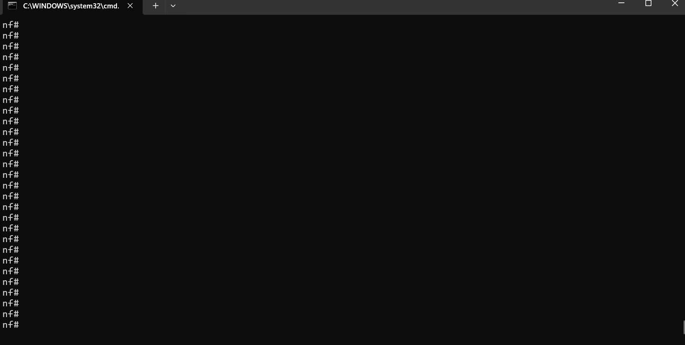
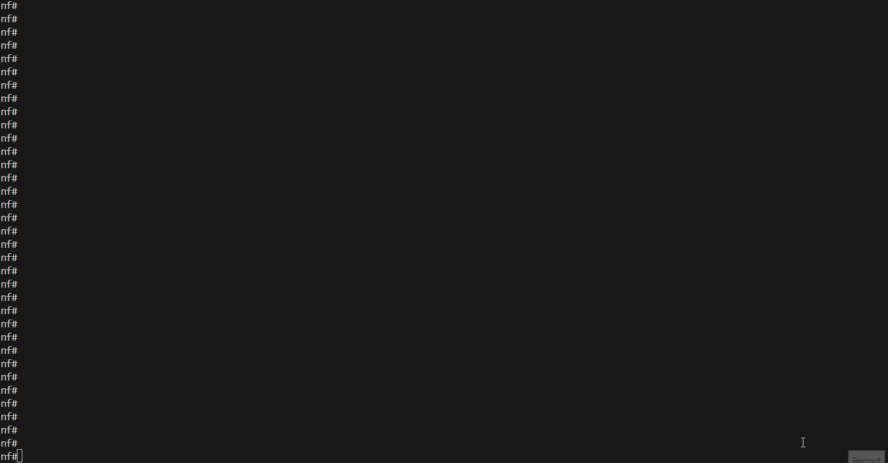

Nornir Service CLI Task¤
task api name:
cli
Nornir service cli task designed to retrieve show commands output
from devices using SSH and Telnet. Nornir cli uses Netmiko, Scrapli
and NAPALM libraries to communicate with devices.
- Netmiko: A multi-vendor library that simplifies SSH connections to network devices.
- Scrapli: A fast and flexible library for interacting with network devices.
- NAPALM: A library that provides a unified API to interact with different network device operating systems.
Nornir CLI Sample Usage¤
Below is an example of how to use the Nornir CLI task to retrieve command outputs from devices.
Example
C:\nf>nfcli
Welcome to NorFab Interactive Shell.
nf#
nf#nornir
nf[nornir]#cli
nf[nornir-cli]#
nf[nornir-cli]#commands "show clock" "show hostname" FC ceos-spine
ceos-spine-1:
show clock:
Sun Dec 1 10:49:58 2024
Timezone: UTC
Clock source: local
show hostname:
Hostname: ceos-spine-1
FQDN: ceos-spine-1
ceos-spine-2:
show clock:
Sun Dec 1 10:49:58 2024
Timezone: UTC
Clock source: local
show hostname:
Hostname: ceos-spine-2
FQDN: ceos-spine-2
nf[nornir-cli]#
Demo

In this example:
nfclicommand starts the NorFab Interactive Shell.nornircommand switches to the Nornir sub-shell.clicommand switches to the CLI task sub-shell.commandscommand retrieves the output of "show clock" and "show hostname" from the devices that containceos-spinein their hostname as we useFC- "Filter Contains" Nornir hosts targeting filter.
inventory.yaml should be located in same folder where we start nfcli, unless nfcli -i path_to_inventory.yaml flag used. Refer to Getting Started section on how to construct inventory.yaml file
This code is complete and can run as is
import pprint
from norfab.core.nfapi import NorFab
if __name__ == '__main__':
nf = NorFab(inventory="inventory.yaml")
nf.start()
client = nf.make_client()
res = client.run_job(
service="nornir",
task="cli",
kwargs={
"commands": ["show clock", "show hostname"],
"FC": "ceos-spine"
}
)
pprint.pprint(res)
nf.destroy()
Once executed, above code should produce this output:
C:\nf>python nornir_cli.py
{'nornir-worker-1': {'errors': [],
'failed': False,
'messages': [],
'result': {'ceos-spine-1': {'show clock': 'Sun Dec 1 '
'11:10:53 2024\n'
'Timezone: UTC\n'
'Clock source: '
'local',
'show hostname': 'Hostname: '
'ceos-spine-1\n'
'FQDN: '
'ceos-spine-1'},
'ceos-spine-2': {'show clock': 'Sun Dec 1 '
'11:10:53 2024\n'
'Timezone: UTC\n'
'Clock source: '
'local',
'show hostname': 'Hostname: '
'ceos-spine-2\n'
'FQDN: '
'ceos-spine-2'}},
'task': 'nornir-worker-1:cli'}}
C:\nf>
Refer to Getting Started section on
how to construct inventory.yaml file.
Use Different Connection Plugins¤
The Nornir Service CLI Task supports various connection plugins, such as netmiko, napalm, and scrapli, to interact with network devices. These plugins provide the flexibility to choose the most suitable method for connecting to and managing your devices, depending on your specific requirements and preferences.
To use a specific connection plugin, ensure that your Nornir inventory is properly configured with the necessary connection parameters and device-specific settings. This includes specifying the plugin type, authentication details, and any additional options required by the plugin.
Example
C:\nf>nfcli
Welcome to NorFab Interactive Shell.
nf#
nf#nornir cli
nf[nornir-cli]#commands "show clock" FC spine plugin netmiko
--------------------------------------------- Job Events -----------------------------------------------
04-Jan-2025 22:37:57 5ed5775b183a404181f004753f583f0c job started
04-Jan-2025 22:37:57.085 nornir nornir-worker-1 ceos-spine-1, ceos-spine-2 task started - 'netmiko_send_commands'
04-Jan-2025 22:37:57.114 nornir nornir-worker-1 ceos-spine-1 task_instance started - 'netmiko_send_commands'
04-Jan-2025 22:37:57.114 nornir nornir-worker-1 ceos-spine-2 task_instance started - 'netmiko_send_commands'
04-Jan-2025 22:37:57.124 nornir nornir-worker-1 ceos-spine-1 subtask started - 'show clock'
04-Jan-2025 22:37:57.136 nornir nornir-worker-1 ceos-spine-2 subtask started - 'show clock'
04-Jan-2025 22:37:57.237 nornir nornir-worker-1 ceos-spine-1 subtask completed - 'show clock'
04-Jan-2025 22:37:57.237 nornir nornir-worker-1 ceos-spine-2 subtask completed - 'show clock'
04-Jan-2025 22:37:57.244 nornir nornir-worker-1 ceos-spine-2 task_instance completed - 'netmiko_send_commands'
04-Jan-2025 22:37:57.245 nornir nornir-worker-1 ceos-spine-1 task_instance completed - 'netmiko_send_commands'
04-Jan-2025 22:37:57.425 nornir nornir-worker-1 ceos-spine-1, ceos-spine-2 task completed - 'netmiko_send_commands'
04-Jan-2025 22:37:57 5ed5775b183a404181f004753f583f0c job completed in 0.476 seconds
--------------------------------------------- Job Results --------------------------------------------
ceos-spine-1:
show clock:
Sat Jan 4 12:37:57 2025
Timezone: UTC
Clock source: local
ceos-spine-2:
show clock:
Sat Jan 4 12:37:57 2025
Timezone: UTC
Clock source: local
nf[nornir-cli]#commands "show clock" FC spine plugin scrapli
--------------------------------------------- Job Events -----------------------------------------------
04-Jan-2025 22:38:01 c6bd014aac4c42249594a6197175012e job started
04-Jan-2025 22:38:01.116 nornir nornir-worker-1 ceos-spine-1, ceos-spine-2 task started - 'scrapli_send_commands'
04-Jan-2025 22:38:01.119 nornir nornir-worker-1 ceos-spine-2 task_instance started - 'scrapli_send_commands'
04-Jan-2025 22:38:01.128 nornir nornir-worker-1 ceos-spine-2 subtask started - 'show clock'
04-Jan-2025 22:38:01.141 nornir nornir-worker-1 ceos-spine-2 subtask completed - 'show clock'
04-Jan-2025 22:38:01.148 nornir nornir-worker-1 ceos-spine-2 task_instance completed - 'scrapli_send_commands'
04-Jan-2025 22:38:01.192 nornir nornir-worker-1 ceos-spine-1 task_instance started - 'scrapli_send_commands'
04-Jan-2025 22:38:01.202 nornir nornir-worker-1 ceos-spine-1 subtask started - 'show clock'
04-Jan-2025 22:38:01.215 nornir nornir-worker-1 ceos-spine-1 subtask completed - 'show clock'
04-Jan-2025 22:38:01.221 nornir nornir-worker-1 ceos-spine-1 task_instance completed - 'scrapli_send_commands'
04-Jan-2025 22:38:01.364 nornir nornir-worker-1 ceos-spine-1, ceos-spine-2 task completed - 'scrapli_send_commands'
04-Jan-2025 22:38:01 c6bd014aac4c42249594a6197175012e job completed in 0.497 seconds
--------------------------------------------- Job Results --------------------------------------------
ceos-spine-1:
show clock:
Sat Jan 4 12:38:01 2025
Sat Jan 4 12:38:01 2025
Timezone: UTC
Clock source: local
ceos-spine-2:
show clock:
Sat Jan 4 12:38:01 2025
Timezone: UTC
Clock source: local
nf[nornir-cli]#commands "show clock" FC spine plugin napalm
--------------------------------------------- Job Events -----------------------------------------------
04-Jan-2025 22:43:41 02eed090a7bb4652b27cccec1a49dab6 job started
04-Jan-2025 22:43:41.360 nornir nornir-worker-1 ceos-spine-1, ceos-spine-2 task started - 'napalm_send_commands'
04-Jan-2025 22:43:41.382 nornir nornir-worker-1 ceos-spine-2 task_instance started - 'napalm_send_commands'
04-Jan-2025 22:43:41.382 nornir nornir-worker-1 ceos-spine-1 task_instance started - 'napalm_send_commands'
04-Jan-2025 22:43:41.388 nornir nornir-worker-1 ceos-spine-1 subtask started - 'napalm_cli'
04-Jan-2025 22:43:41.389 nornir nornir-worker-1 ceos-spine-2 subtask started - 'napalm_cli'
04-Jan-2025 22:43:41.419 nornir nornir-worker-1 ceos-spine-1 subtask completed - 'napalm_cli'
04-Jan-2025 22:43:41.424 nornir nornir-worker-1 ceos-spine-2 subtask completed - 'napalm_cli'
04-Jan-2025 22:43:41.425 nornir nornir-worker-1 ceos-spine-1 task_instance completed - 'napalm_send_commands'
04-Jan-2025 22:43:41.432 nornir nornir-worker-1 ceos-spine-2 task_instance completed - 'napalm_send_commands'
04-Jan-2025 22:43:41.599 nornir nornir-worker-1 ceos-spine-1, ceos-spine-2 task completed - 'napalm_send_commands'
04-Jan-2025 22:43:41 02eed090a7bb4652b27cccec1a49dab6 job completed in 0.576 seconds
--------------------------------------------- Job Results --------------------------------------------
ceos-spine-1:
show clock:
Sat Jan 4 12:43:41 2025
Timezone: UTC
Clock source: local
ceos-spine-2:
show clock:
Sat Jan 4 12:43:41 2025
Timezone: UTC
Clock source: local
nf[nornir-cli]#
nf#
Demo

In this example:
nfclicommand starts the NorFab Interactive Shell.nornircommand switches to the Nornir sub-shell.clicommand switches to the CLI task sub-shell.commandscommand retrieves the output of "show clock" from the devices that containspinein their hostname as we useFC- "Filter Contains" Nornir hosts targeting filter,pluginargument used to inform Nornir service to usenetmiko,scrapliornapalmmodules to retrieve command output from devices.
inventory.yaml should be located in same folder where we start nfcli, unless nfcli -i path_to_inventory.yaml flag used. Refer to Getting Started section on how to construct inventory.yaml file
This code is complete and can run as is
import pprint
from norfab.core.nfapi import NorFab
if __name__ == '__main__':
nf = NorFab(inventory="inventory.yaml")
nf.start()
client = nf.make_client()
res = client.run_job(
service="nornir",
task="cli",
kwargs={
"commands": ["show clock"],
"FC": "ceos-spine",
"plugin": "scrapli"
}
)
pprint.pprint(res)
nf.destroy()
Once executed, above code should produce this output:
C:\nf>python nornir_cli.py
{'nornir-worker-1': {'errors': [],
'failed': False,
'messages': [],
'result': {'ceos-spine-1': {'show clock': 'Sun Dec 1 '
'11:10:53 2024\n'
'Timezone: UTC\n'
'Clock source: '
'local'},
'ceos-spine-2': {'show clock': 'Sun Dec 1 '
'11:10:53 2024\n'
'Timezone: UTC\n'
'Clock source: '
'local'}},
'task': 'nornir-worker-1:cli'}}
C:\nf>
Refer to Getting Started section on
how to construct inventory.yaml file.
Outputting Text Tables¤
NorFab interactive shell supports table argument that can be used to format output into text tables. Internally it relies on tabulate module and most of its features are supported.
Sourcing Commands From File¤
Commands can be provided inline in the shell itself, but it is also possible to source commands from text files stored on broker.
Using Jinja2 Templates¤
Commands can be templated using Jinja2. This allows you to create dynamic commands based on variables defined in your inventory or passed as job data.
Templating Commands with Inline Job Data¤
Templating commands with inline job data allows you to dynamically generate command strings based on variables defined directly within the job data. This approach provides flexibility and customization, enabling you to tailor commands to specific devices or scenarios without the need for external sourced of data.
When defining a job, you can include variables directly within the job_data argument. These variables can then be referenced within the command strings using Jinja2 templating syntax. The Nornir worker will process these templates, substituting the variables with their corresponding values from the job data.
Using Dry Run¤
The dry run feature allows you to see the commands that would be executed without actually sending them to the devices. This is useful for testing and validation. When set to True, the commands will not be sent to the devices, but will be returned as part of the result.
Formatting Output Results¤
You can format the output results using various options provided by the Nornir worker. The output of the commands can be formatted using the to_dict parameter. When set to True, the results will be returned as a dictionary. When set to False, the results will be returned as a list. In addition add_details argument can be used to control the verbosity of the output and return additional Nornir result information such as:
changedflagdiffcontent if supported by pluginfailedstatusexceptiondetails if task execution failed with errorconnection_retrycounter to show how many times RetryRunner tried to establish a connectiontask_retrycounter to show how many times RetryRunner tried to run this task
Running Show Commands Multiple Times¤
You can run show commands multiple times using the repeat parameter. This is useful for monitoring changes over time. The repeat parameter can be used to run the same command multiple times. You can also specify the interval between each repeat using the repeat_interval parameter.
Using Netmiko Promptless Mode¤
NorFab support proprietary promptless mode that can be used with Netmiko, it can be useful when dealing with devices that do not have a consistent prompt, or default Netmiko output collection functions are not reliable enough. This mode can be enabled by setting the use_ps parameter to True.
Parsing Commands Output¤
When using Netmiko plugin the output of commands can be parsed using various parsers such as textfsm, ttp and genie. This allows you to convert the raw output into structured data.
Using TTP parsing templates supported by all Netmiko, Scrapli and NAPALM connection plugins, to invoke TTP can us run_ttp command specifying path to parsing template stored on broker.
Filtering Commands Output¤
The output of commands can be filtered to only include specific information. This can be done using match command with containment patterns.
Sending New Line Character¤
You can send a new line character as part of the command to devices. This is useful for commands that require a new line to be executed properly. To send new-line character need to include _br_ into command text.
Saving Task Results to Files¤
The results of tasks can be saved to files for later analysis and record-keeping. This is particularly useful for maintaining logs of command outputs, configuration changes, and other important data. By saving task results to files, you can create a historical record of network operations, which can be invaluable for troubleshooting, auditing, and compliance purposes.
Using Diff Function to Compare Results¤
The diff function allows you to compare the results of different task results for same commands. This is useful for identifying changes in configurations or device state, detecting anomalies, and verifying the impact of network modifications. By using the diff function, you can ensure that your network remains consistent and identify any unintended changes that may have occurred.
NORFAB Nornir CLI Shell Reference¤
The NorFab shell provides a comprehensive set of commands for the Nornir cli task, allowing you to perform various network utility functions. These commands include options for setting job timeouts, specifying connection parameters, and controlling the execution of CLI commands. The shell reference details the available commands and their descriptions, providing you with the flexibility to tailor the behavior of the tasks to meet your specific network management needs.
nf#man tree nornir.cli
root
└── nornir: Nornir service
└── cli: Send CLI commands to devices
├── timeout: Job timeout
├── workers: Filter worker to target, default 'all'
├── add_details: Add task details to results
├── run_num_workers: RetryRunner number of threads for tasks execution
├── run_num_connectors: RetryRunner number of threads for device connections
├── run_connect_retry: RetryRunner number of connection attempts
├── run_task_retry: RetryRunner number of attempts to run task
├── run_reconnect_on_fail: RetryRunner perform reconnect to host on task failure
├── run_connect_check: RetryRunner test TCP connection before opening actual connection
├── run_connect_timeout: RetryRunner timeout in seconds to wait for test TCP connection to establish
├── run_creds_retry: RetryRunner list of connection credentials and parameters to retry
├── tf: File group name to save task results to on worker file system
├── tf_skip_failed: Save results to file for failed tasks
├── diff: File group name to run the diff for
├── diff_last: File version number to diff, default is 1 (last)
├── progress: Emit execution progress, default 'True'
├── table: Table format (brief, terse, extend) or parameters or True
├── headers: Table headers
├── headers_exclude: Table headers to exclude
├── sortby: Table header column to sort by
├── reverse: Table reverse the sort by order
├── FO: Filter hosts using Filter Object
├── FB: Filter hosts by name using Glob Patterns
├── FH: Filter hosts by hostname
├── FC: Filter hosts containment of pattern in name
├── FR: Filter hosts by name using Regular Expressions
├── FG: Filter hosts by group
├── FP: Filter hosts by hostname using IP Prefix
├── FL: Filter hosts by names list
├── FM: Filter hosts by platform
├── FX: Filter hosts excluding them by name
├── FN: Negate the match
├── hosts: Filter hosts to target
├── *commands: List of commands to collect form devices, default 'PydanticUndefined'
├── plugin: Connection plugin parameters
│ ├── netmiko: Use Netmiko plugin to configure devices
│ │ ├── enable: Attempt to enter enable-mode
│ │ ├── use_timing: switch to send command timing method
│ │ ├── expect_string: Regular expression pattern to use for determining end of output
│ │ ├── read_timeout: Maximum time to wait looking for pattern
│ │ ├── auto_find_prompt: Use find_prompt() to override base prompt
│ │ ├── strip_prompt: Remove the trailing router prompt from the output
│ │ ├── strip_command: Remove the echo of the command from the output
│ │ ├── normalize: Ensure the proper enter is sent at end of command
│ │ ├── use_textfsm: Process command output through TextFSM template
│ │ ├── textfsm_template: Name of template to parse output with
│ │ ├── use_ttp: Process command output through TTP template
│ │ ├── ttp_template: Name of template to parse output with
│ │ ├── use_genie: Process command output through PyATS/Genie parser
│ │ ├── cmd_verify: Verify command echo before proceeding
│ │ ├── interval: Interval between sending commands
│ │ ├── use_ps: Use send command promptless method
│ │ ├── use_ps_timeout: Promptless mode absolute timeout
│ │ ├── new_line_char: Character to replace with new line before sending to device, default is _br_
│ │ ├── repeat: Number of times to repeat the commands
│ │ ├── stop_pattern: Stop commands repeat if output matches provided glob pattern
│ │ ├── repeat_interval: Time in seconds to wait between repeating commands
│ │ └── return_last: Returns requested last number of commands outputs
│ ├── scrapli: Use Scrapli plugin to configure devices
│ │ ├── failed_when_contains: String or list of strings indicating failure if found in response
│ │ ├── timeout_ops: Timeout ops value for this operation
│ │ ├── interval: Interval between sending commands
│ │ ├── split_lines: Split multiline string to individual commands
│ │ ├── new_line_char: Character to replace with new line before sending to device, default is _br_
│ │ ├── repeat: Number of times to repeat the commands
│ │ ├── stop_pattern: Stop commands repeat if output matches provided glob pattern
│ │ ├── repeat_interval: Time in seconds to wait between repeating commands
│ │ └── return_last: Returns requested last number of commands outputs
│ └── napalm: Use NAPALM plugin to configure devices
│ ├── interval: Interval between sending commands
│ ├── split_lines: Split multiline string to individual commands
│ └── new_line_char: Character to replace with new line before sending to device, default is _br_
├── cli_dry_run: Dry run the commands
├── enable: Enter exec mode
├── run_ttp: TTP Template to run
└── job_data: Path to YAML file with job data
nf#
* - mandatory/required command argument
Python API Reference¤
Task to collect show commands output from devices using Command Line Interface (CLI).
Parameters:
| Name | Type | Description | Default |
|---|---|---|---|
commands
|
list
|
List of commands to send to devices. |
None
|
plugin
|
str
|
Plugin name to use. Valid options are
|
'netmiko'
|
cli_dry_run
|
bool
|
If True, do not send commands to devices, just return them. |
False
|
run_ttp
|
str
|
TTP Template to run. |
None
|
job_data
|
str
|
URL to YAML file with data or dictionary/list of data to pass on to Jinja2 rendering context. |
None
|
to_dict
|
bool
|
If True, returns results as a dictionary. |
True
|
add_details
|
bool
|
If True, adds task execution details to the results. |
False
|
**kwargs
|
Additional arguments to pass to the specified task plugin. |
{}
|
Returns:
| Name | Type | Description |
|---|---|---|
dict |
dict
|
A dictionary with the results of the CLI task. |
Raises:
| Type | Description |
|---|---|
UnsupportedPluginError
|
If the specified plugin is not supported. |
FileNotFoundError
|
If the specified TTP template or job data file cannot be downloaded. |
Source code in norfab\workers\nornir_worker.py
917 918 919 920 921 922 923 924 925 926 927 928 929 930 931 932 933 934 935 936 937 938 939 940 941 942 943 944 945 946 947 948 949 950 951 952 953 954 955 956 957 958 959 960 961 962 963 964 965 966 967 968 969 970 971 972 973 974 975 976 977 978 979 980 981 982 983 984 985 986 987 988 989 990 991 992 993 994 995 996 997 998 999 1000 1001 1002 1003 1004 1005 1006 1007 1008 1009 1010 1011 1012 1013 1014 1015 1016 1017 1018 1019 1020 1021 1022 1023 1024 1025 1026 1027 1028 1029 1030 1031 1032 1033 1034 1035 1036 1037 1038 | |